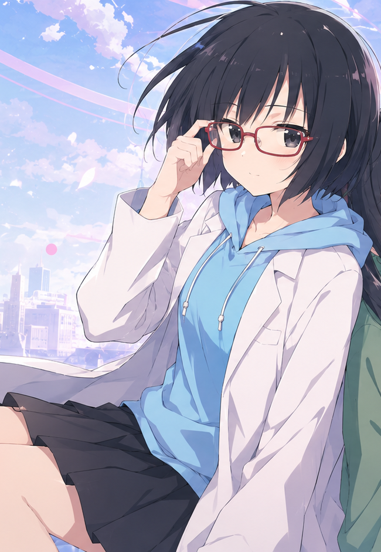

THE RESEARCHER
巴 理恵 ともえ りえ
静かな観察眼で、
答えの輪郭をなぞる。
- AGE
- 17
- HEIGHT
- 183 cm
- BIRTHDAY
- 01.23
- TYPE
- O
応用分子工学を研究する科学者。魔女・魔法少女の能力を科学的に解析する。防御と解析に特化し、攻撃を受けながら相手の弱点を見抜く。
MORE ABOUT RIE →01
CHARACTER FILE / 01 — 02
研究者の姉と、魔法少女の妹。
同じ朝から、それぞれの物語へ。
01 02
科学で魔法を理解しようとする姉・理恵と、魔法で戦う妹・和葉。性格も立場も違うふたりは、お互いを誰より深く信頼している。
魔女を研究対象として科学的に解析する姉と、その研究を支えながら戦う妹。小さな日常のすぐ隣に、少しだけ不思議な世界がある。

THE RESEARCHER
静かな観察眼で、
答えの輪郭をなぞる。
応用分子工学を研究する科学者。魔女・魔法少女の能力を科学的に解析する。防御と解析に特化し、攻撃を受けながら相手の弱点を見抜く。
MORE ABOUT RIE →THE MAGIC GIRL
好奇心のままに、
風を追いかける。
魔法少女として戦い、姉の研究と分析を支える。警戒心は強いが、理恵の前では素直。理恵以外の年上女性には、なかなか心を開かない。
MORE ABOUT KAZUHA →03 LITTLE STORY
ノートに書かれた数式と、飲みかけのマグカップ。誰にも見せない弱さも、ふたりだけの前なら少しだけ言葉にできる。
TOMOE RIE & KAZUHA